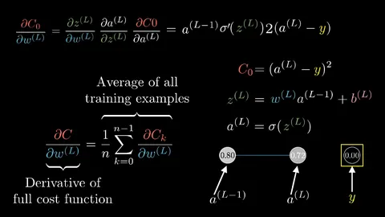
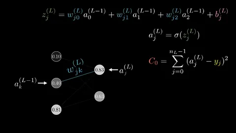
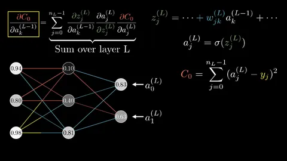
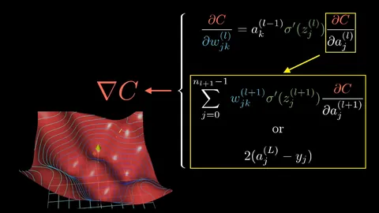

Understanding Neural Networks
A beginner's guide to understanding neural networks, exploring their history, applications, challenges, and foundational backpropagation algorithm
By Sukalyan RoyPublished 6 min read

This post is a very basic level summary of my understanding of Neural nets from popular science videos across YouTube. Do check out the references and then re-read this article for a better understanding.
Neural networks are an attempt to model the way a human brain learns using a network of interconnected Neurons.
These neurons learn and update themselves with each step they run, and slowly approach a particular behavior, which in the domain of Machine learning, would be something like a classification or clustering task.
History #
The history of neural networks is longer than most people think. While the idea of “a machine that thinks” can be traced to the Ancient Greeks, we’ll focus on the key events that led to the evolution of thinking around neural networks, which has ebbed and flowed in popularity over the years:
1943: Warren S. McCulloch and Walter Pitts published “A logical calculus of the ideas immanent in nervous activity”
This research sought to understand how the human brain could produce complex patterns through connected brain cells, or neurons. One of the main ideas that came out of this work was the comparison of neurons with a binary threshold to Boolean logic (i.e., 0/1 or true/false statements).
1958: Frank Rosenblatt is credited with the development of the perceptron, documented in his research, “The Perceptron: A Probabilistic Model for Information Storage and Organization in the Brain”
He takes McCulloch and Pitt’s work a step further by introducing weights to the equation. Leveraging an IBM 704, Rosenblatt was able to get a computer to learn how to distinguish cards marked on the left vs. cards marked on the right.
1974: While numerous researchers contributed to the idea of backpropagation, Paul Werbos was the first person in the US to note its application within neural networks within his PhD thesis
1989: Yann LeCun published a paper illustrating how the use of constraints in backpropagation and its integration into the neural network architecture can be used to train algorithms. This research successfully leveraged a neural network to recognize hand-written zip code digits provided by the U.S. Postal Service.
Where Neural Networks Shine #
You might not realize it, but neural networks are probably part of your daily life already. Here's where you'll find them:
-
Helping doctors spot diseases in medical images
-
Powering the language translation app on your phone
-
Teaching self-driving cars to navigate safely
-
Catching fraudulent transactions before they happen
-
Helping scientists discover new medicines
-
Suggesting your next favorite Netflix show
-
Predicting weather patterns and climate changes
Limitations and Challenges #
By their very nature of training, Neural Networks require a lot of processing power, and hence, like almost all other modern methods of AI development, are somewhat harmful for the environment. But the fact that they work better than almost anything else, makes them indispensable.
They also need a massive amount of data to train. Just as we cannot learn a new language by simply reading a single book, so can’t a Neural network learn the features of a problem with a small dataset.
Another big concern about using Neural networks or Machine learning in general is their Black box nature. Due to the sheer automated complexity of these beasts, no one can directly pinpoint a particular part in the code, or a particular neuron or edge and confidently say that this is exactly what it’s doing. (Though in some demo playgrounds online, some websites do allow us to see it specifically. It’s not doable, as per my knowledge, in real world applications at the time of writing this.)
Back-propagation #
One cannot discuss neural networks without describing the foundational process that powers it.
Back-propagation is the algorithm that decides how the weights and biases of a layer is changed according to a given piece of training data. Once we adjust one layer, we can recursively change the previous layer and so on, hence the "back" propagation.
A proper gradient descent step would take the entire dataset and calculate the back-propagation for it all and then apply the final average change to the weights at the very end. In practice however, we divide the dataset into multiple smaller ones and do the steps on each of them, thus making it computationally faster. This is called Stochastic Gradient Descent.

This one picture above summarizes the calculus. These are each of the terms. \(C_{0}\) is the cost function.
In the post, z is the neuron value, a is the activation value and b is the bias.
In the following notation, the superscript is the layer number and the subscript is the neuron number.
\(z^{(L)}\) is the net effect of each neuron, which is based on the weight \(w^{(L)}\), the effect of the previous neuron \(a^{(L-1)}\) and the bias \(b^{(L)}\).
We put the \(z\) through the transformer function which is this case is the sigmoid function, but we can use newer stuff like the ReLu function.
And just how we differentiated with respect to the weight, we also differentiate w.r.t. the value of the last neuron \(a^{(L-1)}\) and the bias of the last neuron \(b^{(L-1)}\). All the math until now assumes only one previous neuron, but to change it to have multiple past neurons we just need the following change: We put a subscript to the neuron as \(a_j\) to represent the \(j\)th neuron in a layer.

Thus for each \(j\)th neuron in a layer, we do all the calculus aforementioned for each of the \(k\) previous layer neurons. Which looks like:


Also, according to this video and we can verify this by manually calculating some derivatives ourselves, the pattern for the expressions are something like
FROM\(\)TO(1-TO)\(\)\(\delta\)TO
Where each of the terms is the value of the neuron. That is the from neuron and the to neuron.
Coding up a simple neural net #
The following is the python notebook, converted to a single .py file so that I could copy paste the entire thing here.
Even if you cannot understand the code completely, Do read all the comments.
#!/usr/bin/env python
# coding: utf-8
# This is an attempt to code up MNIST classifier from scratch,
# In[1]:
import numpy as np
import pandas as pd
from matplotlib import pyplot as plt
data = pd.read_csv('../Datasets/MNIST_Train.csv')
## importing packages and the training dataset
# Here there is a Mnist dataset with a csv file that stores the pixel values
# for each 28x28 image. For a total of 784 pixel values for each picture.
# In[2]:
data = np.array(data)
m,n = data.shape # m is the number of examples in our dataset,
# n is the number of features + 1 (because of the label)
np.random.shuffle(data) # Shuffling the data before splitting dev and
# training dataset
print(m,n)
# In[3]:
# dev split is more like a verification split before
# going on the testing data
data_dev = data[0:1000].T
Y_dev = data_dev[0]
X_dev = data_dev[1:n]
X_dev = X_dev/255.
data_train = data[1000:m].T
Y_train = data_train[0]
X_train = data_train[1:n]
X_train = X_train/255.
_,m_train = X_train.shape # m_train is the number of examples used in training
# In[4]:
m_train
# In[5]:
# now to define some functions
def init_params():
# It will be (output,input) for all values
W1 = np.random.rand(50,784) - 0.5
b1 = np.random.rand(50,1) - 0.5
W2 = np.random.rand(10,50) - 0.5
b2 = np.random.rand(10,1) - 0.5
W3 = np.random.rand(10,10) - 0.5
b3 = np.random.rand(10,1) - 0.5
return W1,b1,W2,b2,W3,b3
def Relu(Z):
return np.maximum(Z,0)
def softmax(Z):
A = np.exp(Z) / sum(np.exp(Z))
return A
# We propagate the values forward
def forward_prop(W1,b1,W2,b2,W3,b3,X):
Z1 = W1.dot(X) + b1
A1 = Relu(Z1)
Z2 = W2.dot(A1) + b2
A2 = Relu(Z2)
Z3 = W3.dot(A2) + b3
A3 = softmax(Z3)
return Z1,A1,Z2,A2,Z3,A3
def Relu_deriv(Z):
return Z > 0
def one_hot(Y):
one_hot_Y = np.zeros((Y.size,Y.max()+1)) # y.size is no. of elements in Y,
# y.max()+1 is the no. of unique catagories in Y
one_hot_Y[np.arange(Y.size),Y] = 1 # This goes through all rows, and columns according to labels, and assigns 1
one_hot_Y = one_hot_Y.T
return one_hot_Y
# This is for the backpropagation step.
def backprop(Z1, A1, Z2, A2,Z3,A3, W1, W2,W3, X, Y):
one_hot_Y = one_hot(Y)
# 3 layers one after the other
dZ3 = A3 - one_hot_Y
dW3 = 1 / m * dZ3.dot(A2.T)
db3 = 1 / m * np.sum(dZ3)
dZ2 = W3.T.dot(dZ3) * Relu_deriv(Z2)
dW2 = 1 / m * dZ2.dot(A1.T)
db2 = 1 / m * np.sum(dZ2)
dZ1 = W2.T.dot(dZ2) * Relu_deriv(Z1)
dW1 = 1 / m * dZ1.dot(X.T)
db1 = 1 / m * np.sum(dZ1)
return dW1, db1, dW2, db2, dW3, db3
# We change each parameter based on the learning rate and how deviated it is
# from actual answer.
def update_params(W1, b1, W2, b2, W3,b3,dW1, db1, dW2, db2,dW3,db3, alpha):
W1 = W1 - alpha * dW1
b1 = b1 - alpha * db1
W2 = W2 - alpha * dW2
b2 = b2 - alpha * db2
W3 = W3 - alpha * dW3
b3 = b3 - alpha * db3
return W1, b1, W2, b2, W3, b3
def get_predictions(A3):
return np.argmax(A3, 0)
def get_accuracy(predictions, Y):
print(predictions, Y)
return np.sum(predictions == Y) / Y.size
# In[6]:
def gradient_descent(X, Y, alpha, iterations):
W1,b1,W2,b2,W3,b3 = init_params()
for i in range(iterations):
Z1,A1,Z2,A2,Z3,A3 = forward_prop(W1,b1,W2,b2,W3,b3,X)
dW1, db1, dW2, db2, dW3, db3 = backprop(Z1, A1, Z2, A2, Z3, A3, W1, W2, W3, X, Y)
W1, b1, W2, b2, W3, b3 = update_params(W1, b1, W2, b2, W3,b3,dW1, db1, dW2, db2,dW3,db3, alpha)
if i % 50 == 0:
print("Iteration: ", i) # Print the accuracy every 50 iterations
predictions = get_predictions(A3)
print(get_accuracy(predictions, Y))
predictions = get_predictions(A3)
print(get_accuracy(predictions, Y))
return W1, b1, W2, b2, W3, b3
# In[7]:
get_ipython().run_cell_magic('time', '', '\nW1, b1, W2, b2, W3, b3 = gradient_descent(X_train, Y_train, 0.15, 500)\n')
# Now for comparisons, we will see how my 3 layer model compares with the
# 2 layer one in the tutorial,
# with same alpha, both running on my local machine
#
# (note that the alpha was changed and the notebook was rerun after i
#noted down these values, and things might be very different for
# different alpha and different runtimes)
#
# at iterations | tutorial | my model
#
# 50: 0.3206341463414634 | 0.6187073170731707
#
# 100: 0.6276585365853659 | 0.7072195121951219
#
# 150: 0.7234390243902439 | 0.786219512195122
#
# 200: 0.7646341463414634 | 0.8192682926829268
#
# 250: 0.7895853658536586 | 0.8380243902439024
#
# 300: 0.8058048780487805 | 0.8510243902439024
#
# 350: 0.8179756097560975 | 0.8610975609756097
#
# 400: 0.827560975609756 | 0.8689756097560976
#
# 450: 0.8356097560975609 | 0.8766829268292683
#
# 500: 0.8422682926829268 | 0.8816829268292683
#
# Tutorial model takes 31.1s and my model takes 69s
#
# We notice from here that my model reaches 85% accuracy at 300 iterations,
# so how long does that take?
# On re running, we get around 42s.
#
# So, from this we learn that bigger models are not necesssarily better,
# though I made a bigger one just to i could write some code by myself
# and not just blindly copy everything.
#
# We get from this particular example, around 4% better accuracy on
#training dataset, for 27s seconds or close to 84% more processing time.
# Which is unacceptable unless we value each % increase in precision very much.
#
# At alpha = 0.15, it even performs worse than the 2 layer model.
#
#
# Note: I have not tested the effect of layer input and output shapes on the model
# training, though that might be an important factor as well.
#
# Because when writing these models using some frameworks,
#it's really easy to change all these aspects, it's important
#that you experiment alot when making anything.
# Here it's a lot of code to change to just add or remove 1 layer,
# so too much experimentation is not worth it.
# In[9]:
def make_predictions(X, W1, b1, W2, b2,W3,b3):
_,_,_, _, _, A3 = forward_prop(W1, b1, W2, b2, W3,b3, X)
predictions = get_predictions(A3)
return predictions
def test_prediction(index, W1, b1, W2, b2,W3,b3):
current_image = X_train[:, index, None]
prediction = make_predictions(X_train[:, index, None], W1, b1, W2, b2,W3,b3)
label = Y_train[index]
print("Prediction: ", prediction)
print("Label: ", label)
current_image = current_image.reshape((28, 28)) * 255
plt.gray()
plt.imshow(current_image, interpolation='nearest')
plt.show()
# In[12]:
import random
# In[21]:
# This line is to just see some examples of prediction
test_prediction(random.randrange(0,m_train), W1, b1, W2, b2, W3,b3)
test_prediction(random.randrange(0,m_train), W1, b1, W2, b2, W3,b3)
test_prediction(random.randrange(0,m_train), W1, b1, W2, b2, W3,b3)
test_prediction(random.randrange(0,m_train), W1, b1, W2, b2, W3,b3)
test_prediction(random.randrange(0,m_train), W1, b1, W2, b2, W3,b3)
test_prediction(random.randrange(0,m_train), W1, b1, W2, b2, W3,b3)
# In[22]:
# This is to get the final accuracy
dev_predictions = make_predictions(X_dev, W1, b1, W2, b2,W3,b3)
get_accuracy(dev_predictions, Y_dev)
# Thus we get around 87% accuracy which is good for a model that takes a
#little over 1 minute to train.
#Though by using a simpler model like the one in the tutorial,
# we could get similar performance in around half the time.
#
# Again, I made 3 layers here just to try to add something to it,
#you should always experiment alot with all these parameters of
# your model before you finalize.Conclusion #
We thus learn from experience that bigger models are not always better, and there is a massive amount of experimentation that's involved in developing the best model for the particular situation.
When I revisit this topic in a much more detailed way, I'll make a part two of this blog with a more comprehensive take on this topic, till then, stay tuned and see you soon!
References: #
History taken from: https://www.ibm.com/topics/neural-networks
All pictures taken from this playlist
https://www.youtube.com/playlist?list=PLZHQObOWTQDNU6R1_67000Dx_ZCJB-3pi
https://towardsdatascience.com/understanding-backpropagation-algorithm-7bb3aa2f95fd
I learned about the code implementation from the following video
https://youtu.be/w8yWXqWQYmU?feature=shared
If you want to learn more about why activation functions work, check out this https://medium.com/the-theory-of-everything/understanding-activation-functions-in-neural-networks-9491262884e0